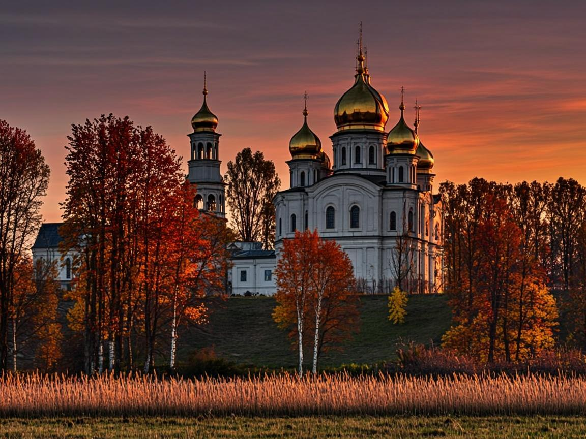
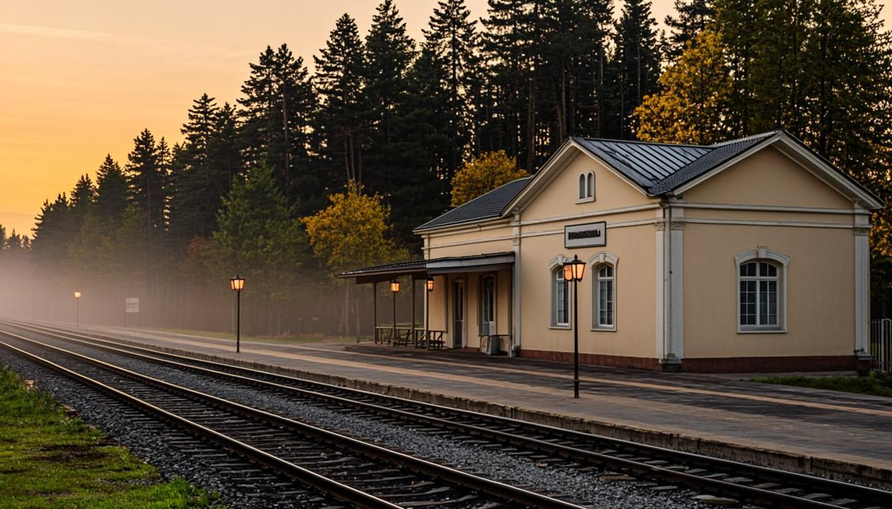
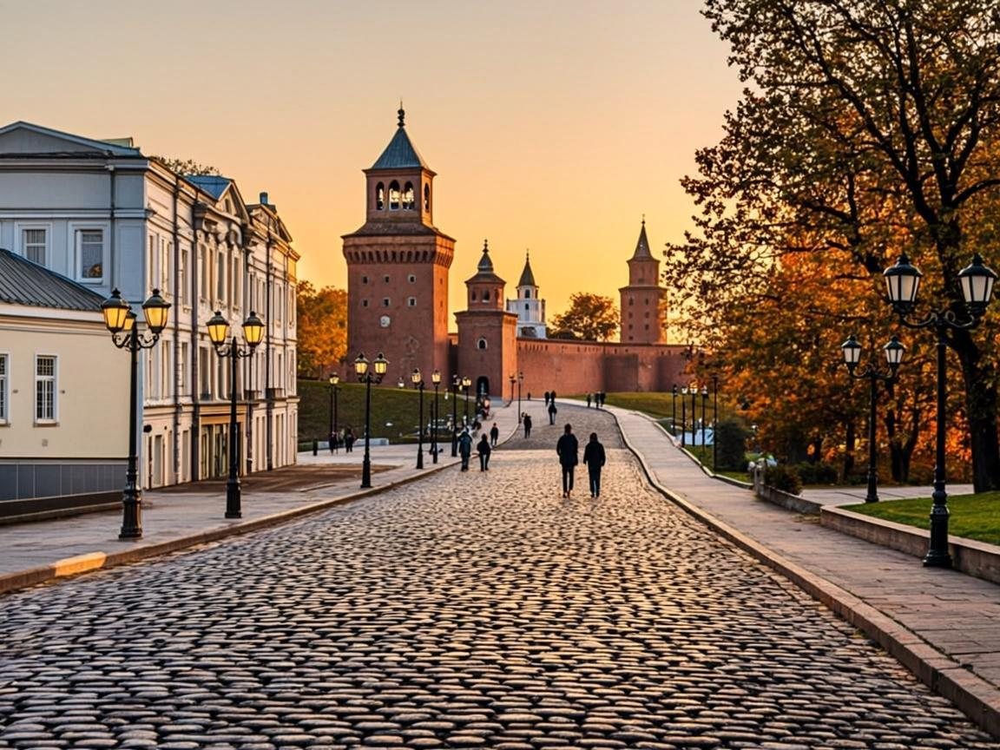
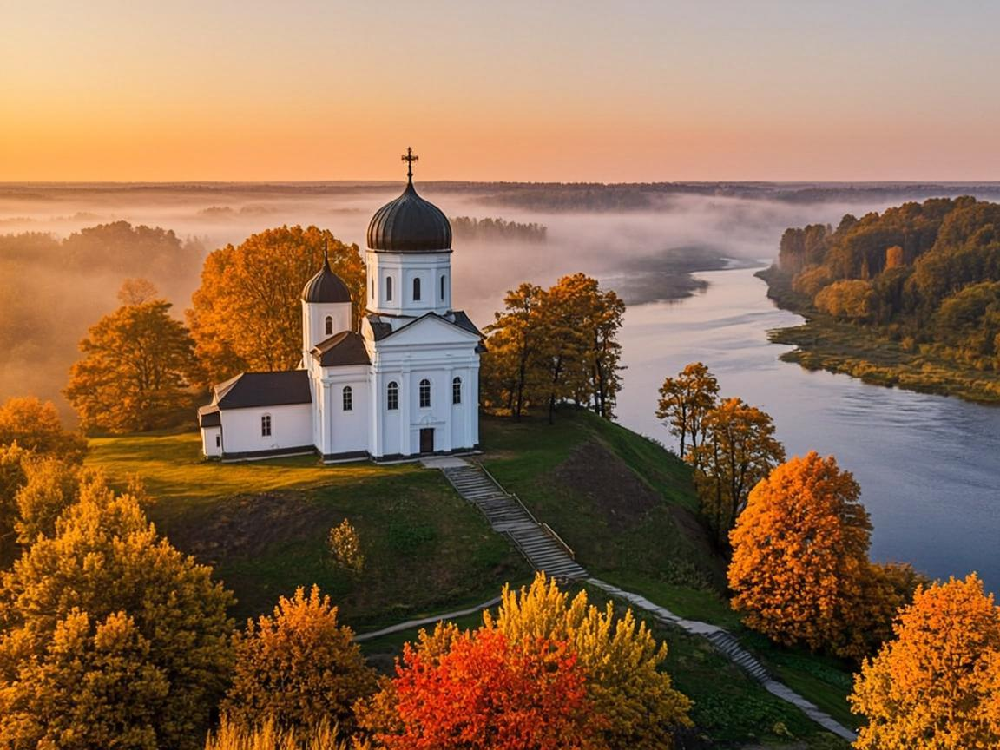
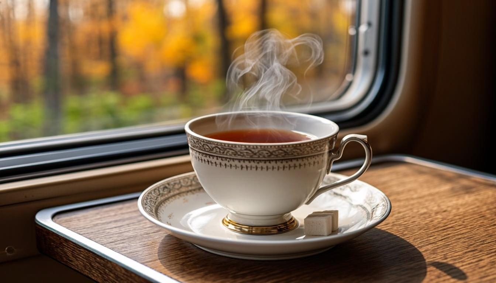

Один день · Ярославский вокзал
Сергиев Посад
Золотые купола Лавры, тихие посадские улицы и самый атмосферный обед выходного дня.
Канал в MAX о Подмосковье
Готовые прогулки на один день: Сергиев Посад, Коломна, Звенигород. В каждом выпуске — расписание электричек, цены и лайфхаки. Сели в поезд — и выходные уже начались.
Новый маршрут — каждую среду в 10:00

Куда едем
Маршруты подобраны так, чтобы от платформы до первой точки было рукой подать, а день сложился без спешки и пересадок наугад.

Один день · Ярославский вокзал
Золотые купола Лавры, тихие посадские улицы и самый атмосферный обед выходного дня.

Один день · Казанский вокзал
Кремль из старого кирпича, тёплые улочки, калачная и набережная для вечернего круга.

Один день · Белорусский вокзал
Белый храм на холме, виды на Москву-реку и лесные тропы в паре шагов от города.
Полные маршруты с остановками, ценами и расписанием — в выпусках канала.
Канал «Москва за МКАД»
Канал — это карманная инструкция к выходным: открыли пост утром — и весь день уже собран.
От вокзала до последней точки: что смотреть, где повернуть, чем закончить день.
Какая платформа, когда отправление и на что успеваете к открытию.
Сколько стоят билеты, обед и билеты в музеи — до поездки, а не на месте.
Где вкусно поесть, что взять с собой и как обойти толпы в сезон.
Стабильный ритм: к выходным у вас уже есть готовый план.
Выпуски не теряются: нужный маршрут легко найти и сохранить в дорогу.
Ритуал выходного
В канале выходит новый маршрут. Читаете за кофе — и решаете, куда едете в субботу.
Электричка с вокзала. Билеты и время отправления уже в выпуске — ничего искать не нужно.
Гуляете по маршруту: точки по порядку, пауза на обед, фото на память.
Обратная электричка и ноль усталости от планирования — только от прогулки.

Почему MAX
Каждый выпуск приходит сам — ничего не тонет в рекомендациях.
Пост с планом дня не потеряется: сохраняйте в избранное и открывайте на платформе.
Можно задать вопрос автору прямо в мессенджере — и получить ответ перед поездкой.
Вопросы и ответы
Бесплатно. Канал открытый — ваши траты это билеты на электричку, обед и входные билеты по желанию.
Да, в этом идея канала: все маршруты построены на электричках. Расписание, платформа и время в пути — в каждом выпуске.
Каждую среду в 10:00. К выходным план уже готов — остаётся выбрать день и купить билет.
Справитесь: выпуски написаны пошагово, с подсказками про вокзал, платформы и посадку. Первый раз — по инструкции, дальше — сами.
Бесплатно · без машины · одна электричка
Подписывайтесь на канал в MAX — и к ближайшей субботе у вас будет готовый маршрут.